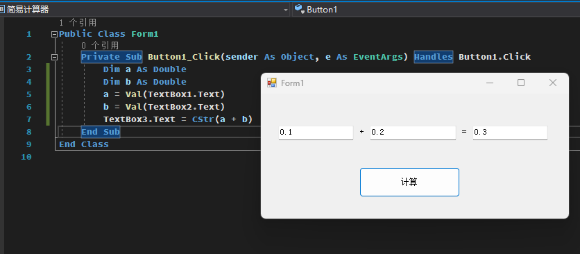
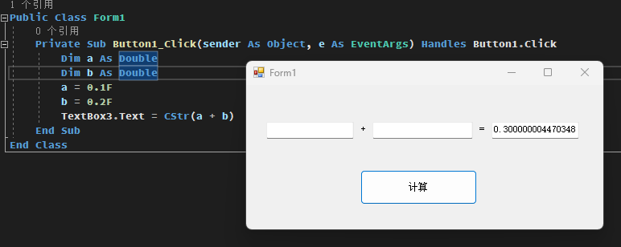

*VB几乎不会遇到浮点精度问题，因此读者可以视情况跳过本节
从一个梗出发
相信对于"0.1+0.2=0.300000004"这个“梗”，大家都有所听闻，那么，VB会不会出现这种问题呢？
但是对于现在的代码，我可以告诉大家，你得到的结果会是0。
因为定义的类型使用了Integer整数类型，此时你输入一个小数，会被取整，最终只能得到0+0。
因此，我们先对代码进行一个修改。。。
然后尝试输入0.1+0.2
或许真的可以这么说，因为VB为了简化运算，默认使用“伪浮点”进行计算。
好处一目了然，我们不需要考虑精度问题，而坏处是牺牲了一部分性能，虽说现在的电脑不需要考虑这一点性能。
那如果我们需要真正的浮点怎么办呢？尝试着把代码改成下面的样子
那么总结一下，VB的浮点，或者说小数比较特殊，我们不需要考虑浮点精度的问题，对我们来说非常方便。
但是对于现在的代码，我可以告诉大家，你得到的结果会是0。
因为定义的类型使用了Integer整数类型，此时你输入一个小数，会被取整，最终只能得到0+0。
因此，我们先对代码进行一个修改。。。
VB.NET
Public Class Form1
Private Sub Button1_Click(sender As Object, e As EventArgs) Handles Button1.Click
Dim a As Double
Dim b As Double
a = Val(TextBox1.Text)
b = Val(TextBox2.Text)
TextBox3.Text = CStr(a + b)
End Sub
End Class
这里把Integer改成了Double，这就是双精度浮点类型，可以用于表示小数。然后尝试输入0.1+0.2

可以看到，VB并没有像其他语言一样输出0.3000000004,而是直接输出了0.3，那么这是不是意味着VB不存在浮点精度问题呢？或许真的可以这么说，因为VB为了简化运算，默认使用“伪浮点”进行计算。
好处一目了然，我们不需要考虑精度问题，而坏处是牺牲了一部分性能，虽说现在的电脑不需要考虑这一点性能。
那如果我们需要真正的浮点怎么办呢？尝试着把代码改成下面的样子
VB.NET
Public Class Form1
Private Sub Button1_Click(sender As Object, e As EventArgs) Handles Button1.Click
Dim a As Double
Dim b As Double
a = 0.1F
b = 0.2F
TextBox3.Text = CStr(a + b)
End Sub
End Class
然后尝试运行一下。

可以看到，现在VB进行的就是真正的浮点运算了。那么总结一下，VB的浮点，或者说小数比较特殊，我们不需要考虑浮点精度的问题，对我们来说非常方便。